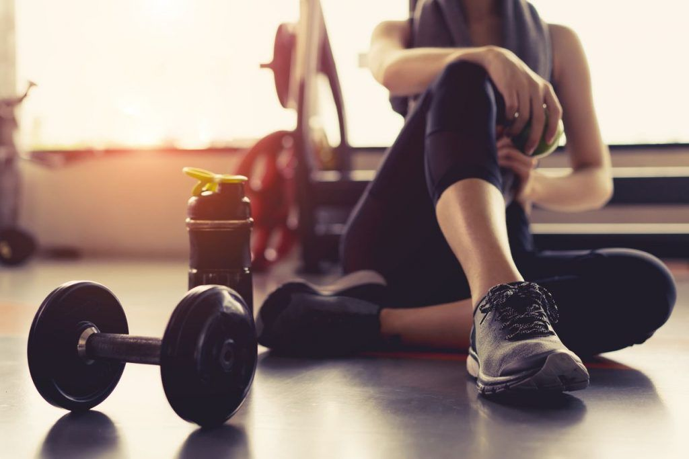

Aunque no lo practico todos los días, siempre que tengo la oportunidad disfruto moverme y conectar con el entorno a través del deporte. Me encanta caminar, hacer trekking, probar deportes extremos o simplemente ejercitarme para liberar energía. A lo largo de mi vida he experimentado distintos tipos de deportes, y cada uno ha sido una forma distinta de disfrutar, aprender y desafiarme.
